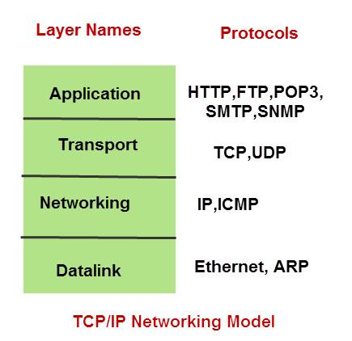

TCP/IP
- The Internet protocol suite is commonly known as TCP/IP because the foundational protocols in the suite are the Transmission Control Protocol (TCP) and the Internet Protocol (IP).
- TCP/IP is a set of data transfer protocols used by modern data networks
- made up of 4 layers: 
- data flow:

Layers
-
application layer
- protocols:
- HTTP - hypertext transfer protocol
- communication protocol between web servers and clients
- port 80, 443 (HTTPS)
- FTP - file transfer protocol
- used for the transfer of computer files between a clent and a server
- port 20, 21
- SMTP - simple mail transfer protocol
- communication protocol for email transmissions
- ports 25, 465 (smtps), 587 (smtps)
- IMAP - internet message access protocol
- protocol used by email clients to retrieve email messages from a mail server
- ports 143, 993 (IMAPS)
- DNS - domain name system
- a hierarchical and decentralized naming system for computers, services, or other resources connected to the Internet or a private network
- port 53
- SSH - secure shell
- protocol for operating network services securely over an unsecured network
- Typical applications include remote command-line, login, and remote command execution, but any network service can be secured with SSH.
- port 22
- Telnet
- one of the earliest remote login protocols
- SSH is generally preferred over telnet for security reasons
- port 23
- POP3 - post office protocol 3
- protocol used by e-mail clients to retrieve e-mail from a mail server
- port 110, 95
- DHCP - dynamic host configuration protocol
- network management protocol
- dynamically assigns ip addresses to each device on a network so they can communicate with other IP networks
- ports 546, 547
- TLS - transport layer security
- encrypts data sent over the internet
- TLS operates between the Transport layer and the Application Layer (kind of). Really it just wraps Application Layer traffic in encryption during transport.
- succeeded SSL - secure sockets layer
- when you see S at the end of a protocol (e.g. HTTPS) it is because it is also using TLS/SSL
- HTTP - hypertext transfer protocol
- protocols:
-
transport layer
- connected to application layer by ports
- Port numbers are categorized into three basic categories: well-known, registered, and dynamic/private.
- protocols
- TCP - transmission control protocol
- enables two hosts to establish a connection and exchange streams of data
- guarantees delivery of data
- guarantees packets will be delivered in the same order in which they were sent
- UDP - user datagram protocol
- connectionless protocol for sending datagrams (packets)
- unlike TCP it provides very few error recovery services
- primarily used for broadcasting messages over a network
- TCP - transmission control protocol
- internet layer
- uses IP to attach origin and destination ip addresses to packets
- protocols:
- IP - internet protocol
- specifies format of packets and adressing scheme
- like the postal system, it allows you to address a package and drop it in the system
- ICMP - internet control message protocol
- an error-reporting protocol network devices like routers use to generate error messages to the source IP address when network problems prevent delivery of IP packets
- IP - internet protocol
- network access layer
- aka: link layer, data link layer, physical layer...
- includes the protocols that define communication between local (on-link) network nodes
- handles mac addressing
- protocols:
- ARP - address resolution protocol
- a communication protocol used for discovering the link layer address, such as a MAC address
- NDP - neighbor discovery protocol
- responsible for gathering various information required for internet communication, including the configuration of local connections and the domain name servers and gateways used to communicate with more distant systems
- OSPF - open shortest path first
- routing protocol
- ethernet
- Wi-Fi
- ARP - address resolution protocol